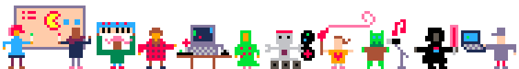
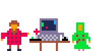

MINI GAME JAM
Im Künstlerhaus in Dortmund
Am 10. Juni 2017

BETA - die hier gesammelten Informationen sind noch nicht verbindlich
Was ist ein Game Jam?
Bei einem Game Jam finden sich Menschen zusammen, um gemeinsam in kurzer Zeit Computerspiele zu entwerfen.
Die Zeitspanne eines Jams variiert dabei von wenigen Stunden bis zu mehreren Tagen oder Wochen. Ein Game Jam kann als lokales Treffen stattfinden oder auch Online abgehalten werden.
Ein Game Jam startet mit einer Themenfindungsphase. Anschließend finden sich die Teilnehmenden zu Gruppen zusammen oder beschließen das Thema alleine zu bearbeiten. Dabei werden die ersten Ideen ausgetauscht und ausprobiert. Charaktere werden geskribbelt, Spielmechaniken diskutiert, Hintergrundgeschichten aufgeschrieben, Hintergründe gepixelt, Sounds angespielt. Stück für Stück entwickeln sich aus spontanen Einfällen im Laufe des Jams kleine Computerspiele, Prototypen und Konzepte.
Zum Abschluss stellen die Teilnehmenden ihre Ergebnisse einander vor, holen sich Feedback an oder Stimmen über das beste Spiel ab.
Regeln
Neben dem Thema, werden bei einem Game Jam häufig Spielregeln aufgestellt, wie z.B:
- Die Spiele müssen mit nur zwei Tasten bedienbar sein.
- Die Auflösung muss der des Game Boys entsprechen.
- Es dürfen nur Bilder, Animationen, Musik und Texte verwendet werden, die im Zeitraum des Jams erstellt werden.
Konstruktives Feedback, Lob und Spass beim Machen und Spielen sind die Hauptmotivation für einen Game Jam.
Was passiert beim Mini Game Jam Dortmund?
Der Game Jam in Dortmund ist eine entspannte eintägige lokale Veranstaltung. Da wir mit 8-10 Stunden unter den üblichen 48-Stunden-Jams liegen, nennen wir das ganze "Mini Game Jam" nach dem Vorbild der Berlin Mini Game Jams.
Es stehen Zeit, Raum und ein paar Steckdosen zur Verfügung, um gemeinsam an Spielen zu arbeiten und sich auszutauschen. In der Regel werden die Spiele komplett im Rahmen des Jams von Grund auf erstellt. Wer den Game Jam aber dafür nutzt, um an einem Projekt weiterzuarbeiten, ist genauso willkommen. Ein Präsentationsrunde schließt den Game Jam ab. Ein Wettbewerb mit Bewertung, Ranking oder Jury wird es nicht geben.
Anmeldung
Meetup und Email. Folgt in Kürze. Themenvorschläge werden unter (themen@game-jam-do.de) gesammelt.
Ablauf
- 11 Uhr
- Einlass, Kennen lernen, Themenauswahl, kurze Begrüssung
- 12 Uhr
- Verkündung des Themas und Start des Jams
- 20 Uhr
- Abschluss und Themenpräsentation
- 21 Uhr
- Spielen, Spass haben, Kontakte knüpfen
Wer kann mitmachen?
Der Game Jam richtet sich ausdrücklich nicht nur an ProgrammiererInnen und Menschen, die professionell Spiele entwickeln. Auch alle Neugierigen, die noch nie an einem Computerspiel gearbeitet haben, sind herzlich willkommen. Ein Computerspiel besteht neben dem Programmcode auch aus Bilder, Musik, Tönen und Texten. Jede und jeder mit Interesse und Lust an Computerspieleentwicklung, kann etwas beisteuern und weitergeben.
Was kostet das?
Der Mini Game Jam ist eine nicht kommerzielle Veranstaltung. Es werden keine Teilnahmegebühren erhoben. Alle Beteiligten werden eingeladen sich an den entstehenden Unkosten mit einer Spenden zu beteiligen. Aber grundsätzlich soll für niemanden eine finanzielle Hürde entstehen. Weiter Infos dazu gibt es vor Ort beim Start des Jams.
Welche Materialien und Geräte werden benötigt?
Die Teilnehmenden bringen in der Regel ihre eigenen Geräte, Laptops, Tablets, Instrumente und Skizzenblöcke zum Jam mit. Ein kleiner Fundus an einfachen Leihgeräten, die für den Verlauf des Jams genutzt werden können, stehen auf Anfrage gerne zur Verfügung. Vorhanden sind Steckdosen, Tische, Stühle und eine Internetverbindung. Außerdem ein Beamer für die Abschlusspräsentation. (Auf die privat mitgebrachten Dinge, müssen alle für sich aufpassen. Es kann kein Haftung übernommen werden.)